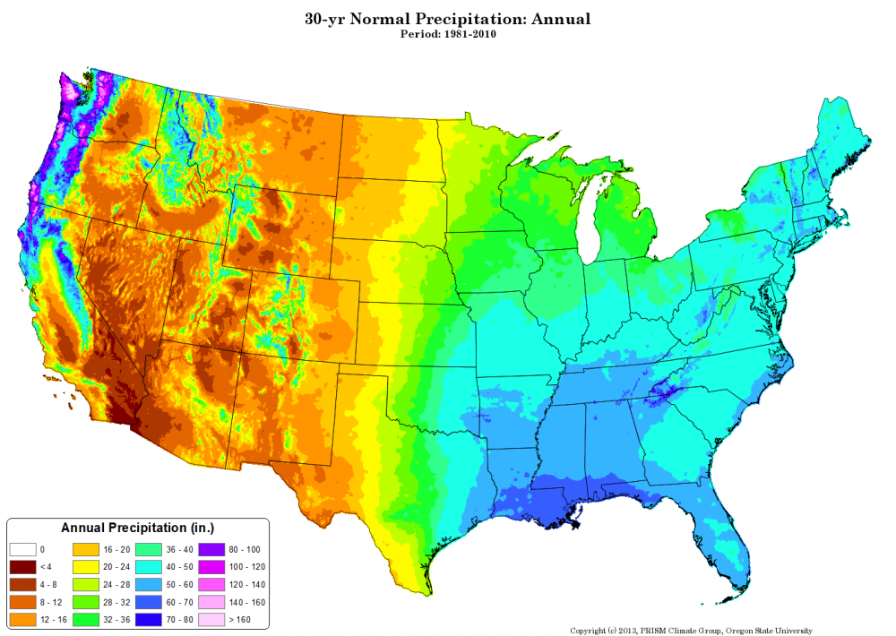
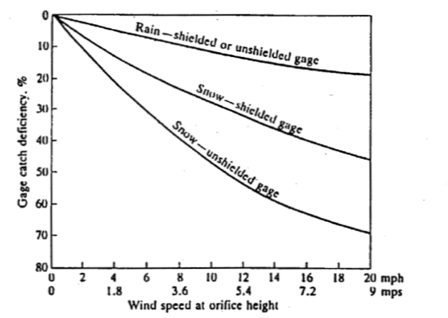
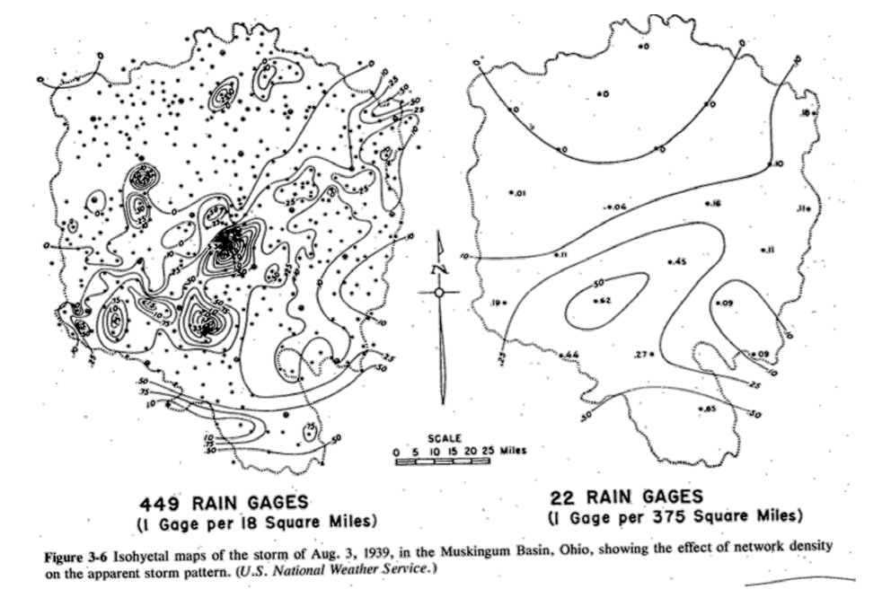
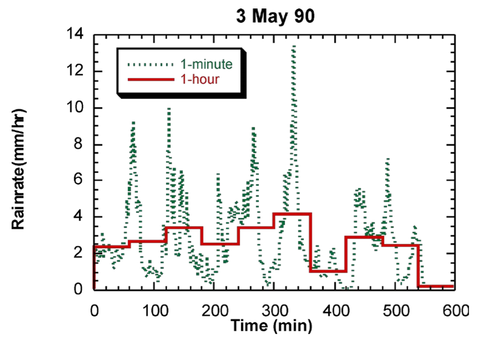

1/28/2019 Notes¶
Streamflow¶
USGS archives high quality river data. USGS NWIS. Most streamgauges transmit in real-time. Lots of information available online.
Measuring Streamflow¶
USGS measures river stages and convert it to discharge. Plotting River Stage vs. Flow Rate to develop a rating curve. USGS will fit the curve between the most recent data. For extreme events, there is much uncertainty about how to extrapolate beyond the normal measured stages.
Example: .. image:: images/ratingcurve.gif
As a comparison, you can you
Precipitation¶
Showing a picture of a research-grade tipping-bucket gage.
Talking about potential errors using the tipping bucket and how it works.
How do we use precipitation gauges? Usually precip gauges are sparsely populated. Can use the Thiessen Polygon method to determine weighting factors.
Example: .. image:: images/ThiesenPolygon.jpg
What is normal precipitation? Normal precipitation is the 30-year average. PRISM datasets are great to see the 30-year average.
Errors¶
Precip gages tend to under predict precipitation. Precip gauges can be designed in a way to minimize this error, like shielding or heating a gauge (snow especially).
Knowing the precip type, windspeed, and shielded or unshielded, we can estimate the “Catch Deficiency”, or:
\(CD(%) = \frac{P_{true} - P_{gage}}{P} * 100%\)
Spatial Undersampling Gauges tend to miss spatial variations in precipitation, as evidence in the comparison below.
Temporal Undersampling: Gauges tend to miss temporal variations in precipitation, as evidence in the comparison below.
Solutions¶
Multisensor radar/gauge products provide gridded hourly precipitation estimates. Combining NEXRAD with raingauges can provide between precipitation estimates. Name: Quantitative Precipitation Estimates is a catch all for everything.